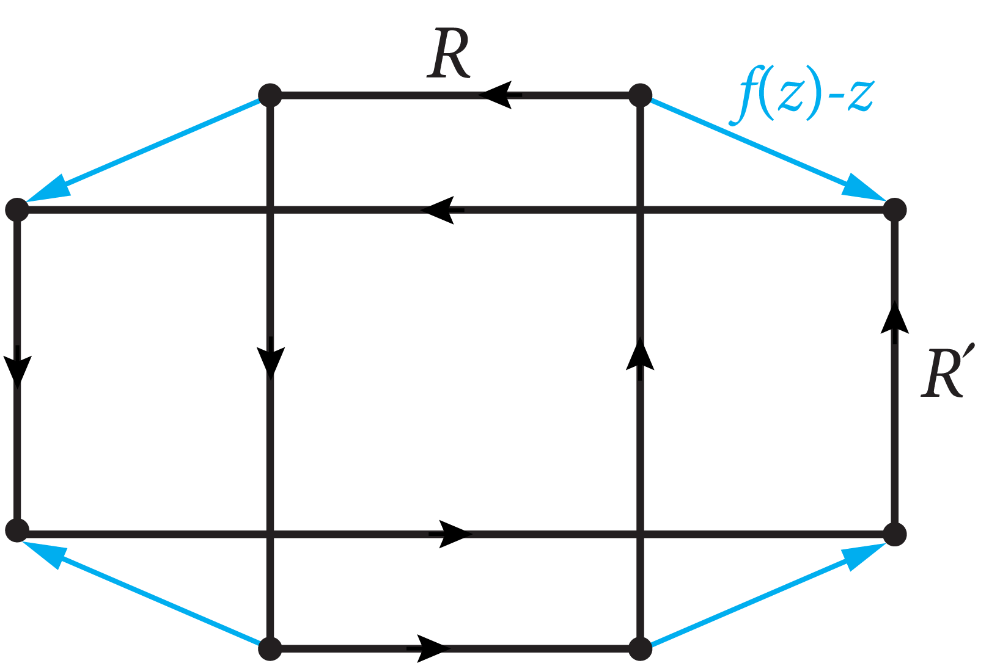

Show that there is a conformal map between the rectangles $R:=[0,a] \times [0,b]$ and $R':=[0,a'] \times [0,b']$ sending each corner of $R$ to the corresponding corner of $R'$ iff $b/a=b'/a'$.
The sufficiency is trivial. The necessity is well-known and usually proved using a length-area (modulus) argument or the Schwarz reflection principle. Try to find a very short proof by contradiction: Assume there is such a conformal map $f:R \to R'$ but $b/a \neq b'/a'$. Move $R,R'$ so that they overlap like a “plus sign” and apply the argument principle to the function $f(z)-z$.

Suppose $f:R \to R'$ is a conformal map sending corners to corners and, say, $b/a>b'/a'$. After composing $f$ with an affine map, we may assume the two rectangles are positioned as in the figure. Let $v(z)=f(z)-z$. On the one hand the image of the positively oriented boundary $\bd R$ under $v$ has winding number $-1$ with respect to the origin. On the other hand, by the argument principle, this winding number is the number of zeros of $v$ in $R$ counting multiplicities, so it must be $\geq 0$. Contradiction!
Remark. This unusual and ingenuous proof is taken from Z. He and O. Schramm, Koebe uniformization and circle packings, Annals of Mathematics, 137 (1993) 369-406. They formulate it in terms of indices of the holomorphic vector field $v$ at its singularities. Note that we have only used $f:\bd R \to \bd R'$ being an orientation-preserving homeomorphism. But, as is well known, this implies $f: R \to R'$ is biholomorphic.